Following is the given information:
The bias current flowing in the circuit is,
The value of  is,
is,
The value of  is,
is,
The device geometry for the transistor is,
The supply voltage is,
The transistor geometry of  and
and  are related by,
are related by,

Following is the given information:
The bias current flowing in the circuit is,
The value of is,
The value of is,
The device geometry for the transistor is,
The supply voltage is,
The transistor geometry of and are related by,
The overdrive voltage of the transistor  and
and  is given by the expression,
is given by the expression,
Substituting the known values of  , 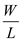and
, 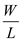and  , the over drive voltage is given by,
, the over drive voltage is given by,
The transconductance  of a device is,
of a device is,
The transconductance of  and
and  is equal as the currents and the over drives voltages are equal, that is
is equal as the currents and the over drives voltages are equal, that is
It is given that the gain of ,
,  and
and  is identical and is equal to the gain of
is identical and is equal to the gain of
 .
.
As the gains are equal the over drive voltages of  ,
,  and
and  are equal to the over drive voltage of
are equal to the over drive voltage of , that is,
, that is,
Now for the transistor  the over drive voltage is related to the device geometry by the expression,
the over drive voltage is related to the device geometry by the expression,
Substituting the known values of ,  and in the above expression, we get
and in the above expression, we get
 is four times as wide as
is four times as wide as , hence the device geometry of
, hence the device geometry of  is,
is,
Hence the off-chip resistor is given by ,
is given by ,
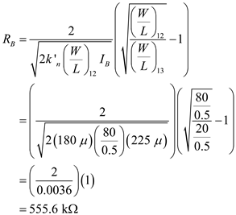
Hence the value of the off-chip resistor  is 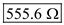.
is 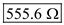.
From Ohm’s law the voltage drop across  is,
is,
Hence, the voltage drop across  is 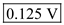.
is 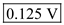.
It is given that the gain of ,
,  and
and  is identical and is equal to the gain of
is identical and is equal to the gain of
 . But we note that the transistors
. But we note that the transistors ,
,  and
and  are 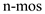, where as
are 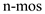, where as
 are p-mos, as a result,
are p-mos, as a result,
As ,  and
and  are identical.
are identical.
Therefore, the values of .
The over drive voltage is given by the expression

For the transistor  is given by,
is given by,
Hence the gate voltage of is given by,
Hence the output voltage at the gate of is 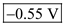.
is 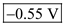.
As the gains of  and
and  are identical, the over drive voltage is
are identical, the over drive voltage is
Hence the gate source voltage is,
Hence the gate voltage of  is given by,
is given by,
Hence the gate voltage of  is 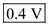.
is 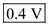.
As the transistor  and
and  are identical,
are identical,
Hence the gate voltage of  is
is  .
.